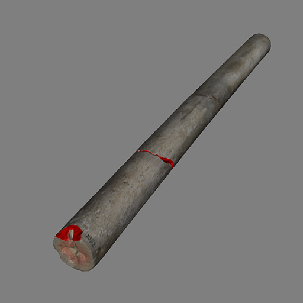
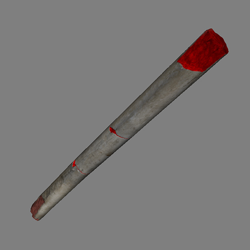
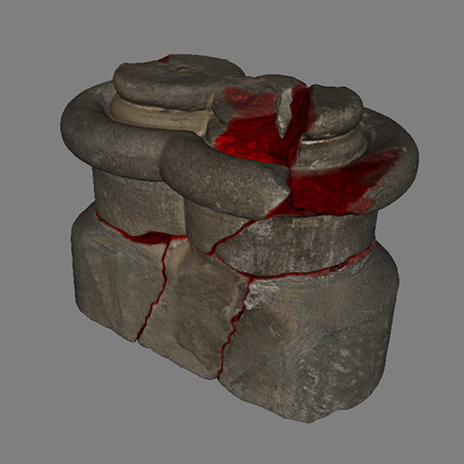
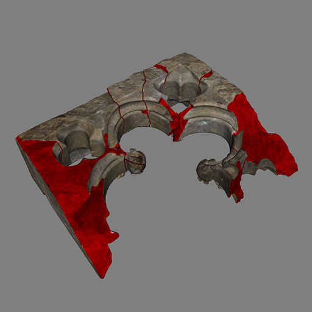
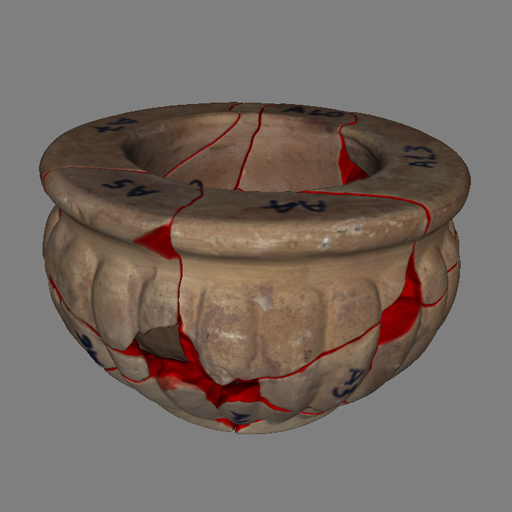
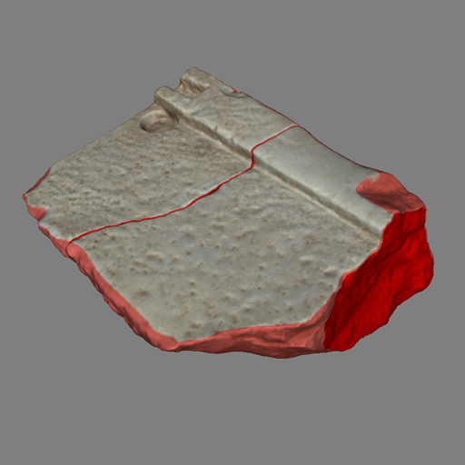

Labeled Fractured Objects Repository
This site provides an extensible collection of digitized fractured objects, accompanied by grey-scale label mask textures that store a confidence value for the underlying part of the geometry belonging to a fractured surface.
Format
The fragments in the repository are grouped by the object they belong to in zip files. The pieces are assembled (either automatically or manually) so that their pose can be used by tools that attempt to automate the labeling process. The fragment files are provided in binary glTF format (.glb) with the base color embedded. Labeling is given separately as a png texture. For each FRAGMENT.glb file, a corresponding FRAGMENT_fracture.png bitmap is provided, with grey scale values indicating the confidence that the underlying geometry is fractured. The label masks of all fragments in a dataset have the same resolution, but could be different. By default, the confidence weights are greyscale values stored as RGB data in the PNG files. However, we assume that the information is only carried in the red channel, freeing G and B for additional information in future versions.
Why Use Textures?
Labeling is provided as a texture to decouple mesh resolution from label data and allow researchers to paint their own confidence weights. The initial label data in the repository were produced with a custom tool that assigned weights according to the proximity of a fragment's position to another fragment in the (assembled) dataset, followed by manual editing in Adobe Substance Painter.
How to Cite the Repository
@URL {LabeledFragcturedObjectsRepository,
author = "Georgios Papaioannou",
year = "2026",
month = "may",
crossref = "https://cgaueb.github.io/fracturedobjects/"
}
Extending the Repository
Feel free to extend the repository by forking it and our team will eventually merge the respective pull request to unify the repository. Please note that the GitHub repository only hosts thumbnails and links to external 3D models. Please also note that all 3D models must be in the glb format, with or without base color textures. Make sure that fracture labeling is correct and upload the correctly named PNG label texture along with your 3D model in the provided zip file in your own repository or web site. Finally, prepare a representative image for your dataset, adhering to the theme of the already provided thumbnails in terms of the solid background (#7f7f7f)
Small vessel replica

A 10-piece dataset of a broken vessel replica digitized by Ploutarchos Iliadis using SfM photogrammetry, as part of his MSc thesis in Digital Methods for the Humanities, AUEB (2025).

Masonry block

A 3-piece dataset of an incomplete broken soapstone block from the Nidaros Cathedral in Trondheim, Norway (2014).
Column 1

A 3-piece dataset of an incomplete broken soapstone column from the Nidaros Cathedral in Trondheim, Norway (2014).
Column 2

A 3-piece dataset of an incomplete broken soapstone column from the Nidaros Cathedral in Trondheim, Norway (2014).
Column Base

A 5-piece dataset of a damaged and fractured soapstone column base from the Nidaros Cathedral in Trondheim, Norway (2014).
Embrasure

A 10-piece dataset of an incomplete fractured soapstone decorative window from the Nidaros Cathedral in Trondheim, Norway (2014).
Ornate pot

A 15-piece ornate clay pot with thick walls and small missing fragments (2015).
Part of a step

Two pieces of a broken marble step from the Elfsis archaeological site (2015).